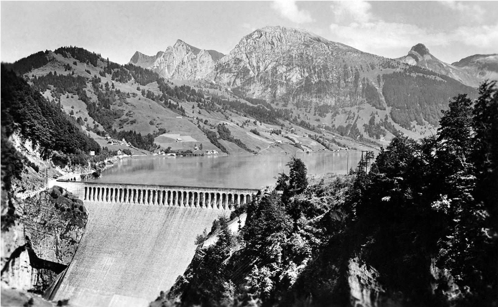

Rückblick ermöglicht kritische Distanz zum eigenen Handeln.
Synonyme: Rückblick / Erinnerung; Distanz / Reflexion
Komplexe Zusammenhänge verhindern einfache Zuweisungen.
Synonyme: Schuld / Verantwortung; Komplexität / Vielschichtigkeit